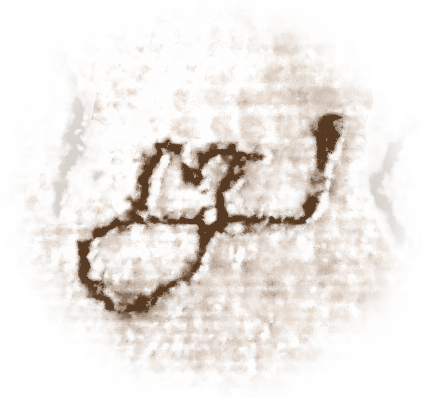

Below-base ligatures

A number of below-base ligatures are used in Tamil manuscripts which are not seen in printed editions. The most prominent among them is the below-base ma
, which may have evolved from the Grantha ëåÆ used to write Sanskrit.